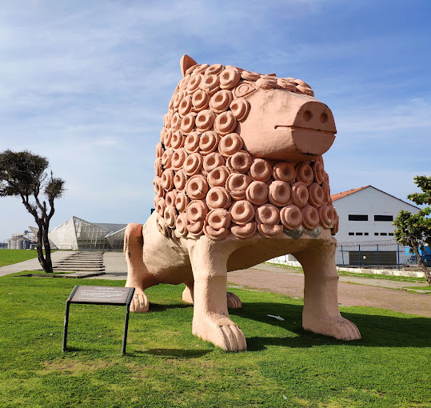
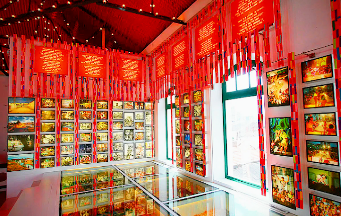
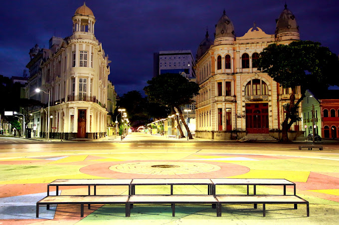
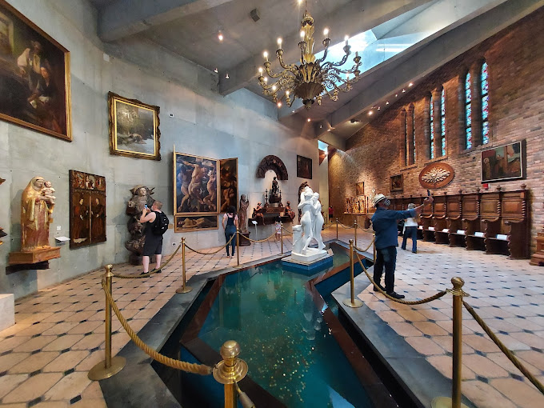
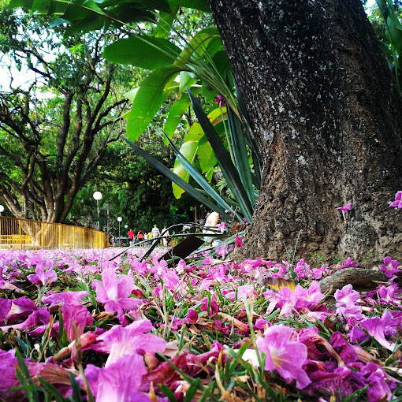

Centro Cultural Cais do Sertão
O Museu Cais do Sertão é um museu interativo sobre o Sertão e Luiz Gonzaga localizado na cidade do Recife, capital de Pernambuco, Brasil. Foi eleito um dos vinte melhores museus da América do Sul em 2015 pelos usuários do site de viagens TripAdvisor.
Paço do Frevo
O Paço do Frevo é um espaço cultural dedicado à difusão, pesquisa, lazer e formação nas áreas da dança e música do frevo localizado na cidade do Recife, capital de Pernambuco, Brasil. Surgiu através de uma parceria entre a Prefeitura do Recife, a Fundação Roberto Marinho, o IPHAN e o Governo Federal.
Praça do Marco Zero
Praça aberta com piso colorido que recebe eventos culturais e concertos musicais.
Instituto Ricardo Brennand
O Instituto Ricardo Brennand, também conhecido como Castelo de Brennand, é uma instituição cultural brasileira sem fins lucrativos localizada na cidade do Recife, capital do estado de Pernambuco. Foi eleito o melhor museu da América do Sul pelo site de viagens TripAdvisor.
Parque da Jaqueira
O Parque da Jaqueira é uma área de lazer da cidade do Recife, localizado no bairro homônimo. O parque se localiza entre a rua do Futuro e a Avenida Rui Barbosa. É considerado o maior da cidade, porém, com a construção do Parque da Macaxeira, passará a ocupar o segundo posto.
